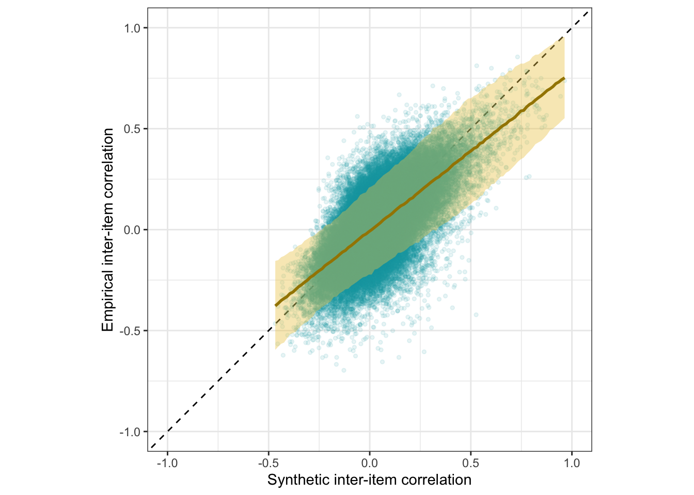

Language models accurately infer correlations between psychological items and scales from text alone
2023-11-07
Here, we apply the pre-trained model and our fine-tuned model to data not used for training, a holdout. The holdout sample was collected by Bainbridge et al. 2022.
knitr::opts_chunk$set(echo = TRUE, error = T, message = F, warning = F)
# Libraries and Settings
# Libs ---------------------------
library(knitr)
library(tidyverse)
library(arrow)
library(glue)
library(psych)
library(lavaan)
library(ggplot2)
library(plotly)
library(gridExtra)
library(broom)
library(broom.mixed)
library(brms)
library(tidybayes)
library(cmdstanr)
library(cowplot)
options(mc.cores = parallel::detectCores(),
brms.backend = "cmdstanr",
brms.file_refit = "on_change")
model_name = "ItemSimilarityTraining-20240502-trial12"
#model_name = "item-similarity-20231018-122504"
pretrained_model_name = "all-mpnet-base-v2"
data_path = glue("./")
pretrained_data_path = glue("./")
set.seed(42)
holdout <- arrow::read_feather(file = file.path(data_path, glue("data/intermediate/{model_name}.raw.osf-bainbridge-2021-s2-0.item_correlations.feather")))
pt_holdout <- arrow::read_feather(file = file.path(data_path, glue("data/intermediate/{pretrained_model_name}.raw.osf-bainbridge-2021-s2-0.item_correlations.feather")))
holdout_mapping_data = arrow::read_feather(
file = file.path(data_path, glue("{model_name}.raw.osf-bainbridge-2021-s2-0.mapping2.feather"))
) %>%
rename(scale_0 = scale0,
scale_1 = scale1)
holdout_human_data = arrow::read_feather(
file = file.path(data_path, glue("{model_name}.raw.osf-bainbridge-2021-s2-0.human.feather"))
)
holdout_scales <- arrow::read_feather(file.path(data_path, glue("{model_name}.raw.osf-bainbridge-2021-s2-0.scales.feather"))
)
N <- holdout_human_data %>% summarise_all(~ sum(!is.na(.))) %>% min()
total_N <- nrow(holdout_human_data)The Bainbridge data was collected on N=493 respondents. The item with the most missing values still had n=480.
Synthetic inter-item correlations
holdout_llm <- holdout %>%
left_join(holdout_mapping_data %>% select(variable_1 = variable, InstrumentA = instrument, ScaleA = scale_0, SubscaleA = scale_1)) %>%
left_join(holdout_mapping_data %>% select(variable_2 = variable, InstrumentB = instrument, ScaleB = scale_0, SubscaleB = scale_1))
pt_holdout_llm <- pt_holdout %>%
left_join(holdout_mapping_data %>% select(variable_1 = variable, InstrumentA = instrument, ScaleA = scale_0, SubscaleA = scale_1)) %>%
left_join(holdout_mapping_data %>% select(variable_2 = variable, InstrumentB = instrument, ScaleB = scale_0, SubscaleB = scale_1))Accuracy
se2 <- mean(holdout_llm$empirical_r_se^2)
r <- broom::tidy(cor.test(holdout_llm$empirical_r, holdout_llm$synthetic_r))
pt_r <- broom::tidy(cor.test(pt_holdout_llm$empirical_r, pt_holdout_llm$synthetic_r))
model <- paste0('
# Latent variables
PearsonLatent =~ 1*empirical_r
# Fixing error variances based on known standard errors
empirical_r ~~ ',se2,'*empirical_r
# Relationship between latent variables
PearsonLatent ~~ synthetic_r
')
fit <- sem(model, data = holdout_llm)
pt_fit <- sem(model, data = pt_holdout_llm)
m_synth_r_items <- brm(
bf(empirical_r | mi(empirical_r_se) ~ synthetic_r + (1|mm(variable_1, variable_2)),
sigma ~ s(synthetic_r)), data = holdout_llm,
file = "ignore/m_synth_r_items_lm")
sd_synth <- sd(m_synth_r_items$data$synthetic_r)
newdata <- m_synth_r_items$data %>% select(empirical_r, synthetic_r, empirical_r_se)
epreds <- epred_draws(newdata = newdata, obj = m_synth_r_items, re_formula = NA, ndraws = 200)
preds <- predicted_draws(newdata = newdata, obj = m_synth_r_items, re_formula = NA, ndraws = 200)
epred_preds <- epreds %>% left_join(preds)
by_draw <- epred_preds %>% group_by(.draw) %>%
summarise(mae = mean(abs(.epred - .prediction)),
.epred = var(.epred),
.prediction = var(.prediction),
sigma = sqrt(.prediction - .epred),
latent_r = sqrt(.epred/.prediction))
rm(epred_preds)
accuracy_bayes_items <- by_draw %>% mean_hdci(latent_r)
bind_rows(
pt_r %>%
mutate(model = "pre-trained", kind = "manifest") %>%
select(model, kind, accuracy = estimate, conf.low, conf.high),
standardizedsolution(pt_fit) %>%
filter(lhs == "PearsonLatent", rhs == "synthetic_r") %>%
mutate(model = "pre-trained", kind = "latent outcome (SEM)") %>%
select(model, kind, accuracy = est.std,
conf.low = ci.lower, conf.high = ci.upper),
r %>%
mutate(model = "fine-tuned", kind = "manifest") %>%
select(model, kind, accuracy = estimate, conf.low, conf.high),
standardizedsolution(fit) %>%
filter(lhs == "PearsonLatent", rhs == "synthetic_r") %>%
mutate(model = "fine-tuned", kind = "latent outcome (SEM)") %>%
select(model, kind, accuracy = est.std,
conf.low = ci.lower, conf.high = ci.upper),
accuracy_bayes_items %>%
mutate(model = "fine-tuned", kind = "latent outcome (Bayesian EIV)") %>%
select(model, kind, accuracy = latent_r, conf.low = .lower, conf.high = .upper)
) %>%
knitr::kable(digits = 2)| model | kind | accuracy | conf.low | conf.high |
|---|---|---|---|---|
| pre-trained | manifest | 0.19 | 0.18 | 0.19 |
| pre-trained | latent outcome (SEM) | 0.19 | 0.19 | 0.20 |
| fine-tuned | manifest | 0.67 | 0.67 | 0.68 |
| fine-tuned | latent outcome (SEM) | 0.70 | 0.70 | 0.70 |
| fine-tuned | latent outcome (Bayesian EIV) | 0.71 | 0.70 | 0.72 |
Prediction error plot according to synthetic estimate
## Family: gaussian
## Links: mu = identity; sigma = log
## Formula: empirical_r | mi(empirical_r_se) ~ synthetic_r + (1 | mm(variable_1, variable_2))
## sigma ~ s(synthetic_r)
## Data: holdout_llm (Number of observations: 87153)
## Draws: 4 chains, each with iter = 2000; warmup = 1000; thin = 1;
## total post-warmup draws = 4000
##
## Smoothing Spline Hyperparameters:
## Estimate Est.Error l-95% CI u-95% CI Rhat Bulk_ESS
## sds(sigma_ssynthetic_r_1) 0.64 0.24 0.30 1.25 1.00 1402
## Tail_ESS
## sds(sigma_ssynthetic_r_1) 2008
##
## Multilevel Hyperparameters:
## ~mmvariable_1variable_2 (Number of levels: 418)
## Estimate Est.Error l-95% CI u-95% CI Rhat Bulk_ESS Tail_ESS
## sd(Intercept) 0.03 0.00 0.03 0.03 1.00 889 1498
##
## Regression Coefficients:
## Estimate Est.Error l-95% CI u-95% CI Rhat Bulk_ESS
## Intercept -0.01 0.00 -0.01 -0.00 1.01 636
## sigma_Intercept -2.20 0.00 -2.21 -2.20 1.00 5202
## synthetic_r 0.79 0.00 0.78 0.80 1.00 5610
## sigma_ssynthetic_r_1 -1.50 0.82 -3.19 -0.03 1.00 2219
## Tail_ESS
## Intercept 1307
## sigma_Intercept 3543
## synthetic_r 3282
## sigma_ssynthetic_r_1 2824
##
## Draws were sampled using sample(hmc). For each parameter, Bulk_ESS
## and Tail_ESS are effective sample size measures, and Rhat is the potential
## scale reduction factor on split chains (at convergence, Rhat = 1).pred <- conditional_effects(m_synth_r_items, method = "predict")
kable(rmse_items <- by_draw %>% mean_hdci(sigma), caption = "Average prediction error (RMSE)", digits = 2)| sigma | .lower | .upper | .width | .point | .interval |
|---|---|---|---|---|---|
| 0.11 | 0.11 | 0.11 | 0.95 | mean | hdci |
kable(mae_items <- by_draw %>% mean_hdci(mae), caption = "Average prediction error (MAE)", digits = 2)| mae | .lower | .upper | .width | .point | .interval |
|---|---|---|---|---|---|
| 0.09 | 0.09 | 0.09 | 0.95 | mean | hdci |
plot_prediction_error_items <- plot(conditional_effects(m_synth_r_items, dpar = "sigma"), plot = F)[[1]] +
theme_bw() +
xlab("Synthetic inter-item correlation") +
ylab("Prediction error (sigma)") +
geom_smooth(stat = "identity", color = "#a48500", fill = "#EDC951")
plot_prediction_error_items
Scatter plot
ggplot(holdout_llm, aes(synthetic_r, empirical_r,
ymin = empirical_r - empirical_r_se,
ymax = empirical_r + empirical_r_se)) +
geom_abline(linetype = "dashed") +
geom_point(color = "#00A0B0", alpha = 0.1, size = 1) +
geom_smooth(aes(
x = synthetic_r,
y = estimate__,
ymin = lower__,
ymax = upper__,
), stat = "identity",
color = "#a48500",
fill = "#EDC951",
data = as.data.frame(pred$synthetic_r)) +
xlab("Synthetic inter-item correlation") +
ylab("Empirical inter-item correlation") +
theme_bw() +
coord_fixed(xlim = c(-1,1), ylim = c(-1,1)) -> plot_items
plot_items
Interactive plot
This plot shows only 2000 randomly selected item pairs to conserve memory. A full interactive plot exists, but may react slowly.
item_pair_table <- holdout_llm %>%
left_join(holdout_mapping_data %>% select(variable_1 = variable,
item_text_1 = item_text)) %>%
left_join(holdout_mapping_data %>% select(variable_2 = variable,
item_text_2 = item_text))
# item_pair_table %>% filter(str_length(item_text_1) < 30, str_length(item_text_2) < 30) %>%
# left_join(pt_holdout_llm %>% rename(synthetic_r_pt = synthetic_r)) %>%
# select(item_text_1, item_text_2, empirical_r, synthetic_r, synthetic_r_pt) %>% View()
rio::export(item_pair_table, "ignore/item_pair_table.feather")
(item_pair_table %>%
mutate(synthetic_r = round(synthetic_r, 2),
empirical_r = round(empirical_r, 2),
items = str_replace_all(str_c(item_text_1, "\n", item_text_2),
"_+", " ")) %>%
sample_n(2000) %>%
ggplot(., aes(synthetic_r, empirical_r,
# ymin = empirical_r - empirical_r_se,
# ymax = empirical_r + empirical_r_se,
label = items)) +
geom_abline(linetype = "dashed") +
geom_point(color = "#00A0B0", alpha = 0.3, size = 1) +
xlab("Synthetic inter-item correlation") +
ylab("Empirical inter-item correlation") +
theme_bw() +
coord_fixed(xlim = c(-1,1), ylim = c(-1,1))) %>%
ggplotly()item_pair_table <- item_pair_table %>%
mutate(empirical_r = sprintf("%.2f±%.3f", empirical_r,
empirical_r_se),
synthetic_r = sprintf("%.2f", synthetic_r)) %>%
select(item_text_1, item_text_2, empirical_r, synthetic_r)
rio::export(item_pair_table, "item_pair_table.xlsx")
Robustness checks
Comparing spline and polynomial models for heteroscedasticity
m_synth_r_items_poly <- brm(
bf(empirical_r | mi(empirical_r_se) ~ synthetic_r + (1|mm(variable_1, variable_2)),
sigma ~ poly(synthetic_r, degree = 3)), data = holdout_llm,
file = "ignore/m_synth_r_items_lm_poly")
newdata <- m_synth_r_items_poly$data %>% select(empirical_r, synthetic_r, empirical_r_se)
epreds <- epred_draws(newdata = newdata, obj = m_synth_r_items_poly, re_formula = NA, ndraws = 200)
preds <- predicted_draws(newdata = newdata, obj = m_synth_r_items_poly, re_formula = NA, ndraws = 200)
epred_preds <- epreds %>% left_join(preds)
by_draw <- epred_preds %>% group_by(.draw) %>%
summarise(.epred = var(.epred),
.prediction = var(.prediction),
sigma = sqrt(.prediction - .epred),
latent_r = sqrt(.epred/.prediction))
accuracy_bayes_items_poly <- by_draw %>% mean_hdci(latent_r)
bind_rows(
accuracy_bayes_items %>%
mutate(model = "spline", kind = "latent outcome (Bayesian EIV)") %>%
select(model, kind, accuracy = latent_r, conf.low = .lower, conf.high = .upper),
accuracy_bayes_items_poly %>%
mutate(model = "polynomial", kind = "latent outcome (Bayesian EIV)") %>%
select(model, kind, accuracy = latent_r, conf.low = .lower, conf.high = .upper)
) %>%
knitr::kable(digits = 2, caption = "Comparing spline and polynomial models for item correlations")| model | kind | accuracy | conf.low | conf.high |
|---|---|---|---|---|
| spline | latent outcome (Bayesian EIV) | 0.71 | 0.7 | 0.72 |
| polynomial | latent outcome (Bayesian EIV) | 0.71 | 0.7 | 0.72 |
plot_prediction_error_items_poly <- plot(conditional_effects(m_synth_r_items_poly, dpar = "sigma"), plot = F)[[1]] +
theme_bw() +
xlab("Synthetic inter-item correlation") +
ylab("Prediction error (sigma)") +
geom_smooth(stat = "identity", color = "#a48500", fill = "#EDC951")
plot_prediction_error_items_polyIs the accuracy lower within/across scales and instruments?
holdout_llm %>%
mutate(same_instrument = if_else(InstrumentA == InstrumentB, 1, 0,0),
same_scale = if_else(ScaleA == ScaleB, 1,0,0),
same_subscale = if_else(same_scale & SubscaleA == SubscaleB, 1,0,0)) %>%
group_by(same_scale, same_instrument, same_subscale) %>%
summarise(broom::tidy(cor.test(synthetic_r, empirical_r)), sd_emp_r = sd(empirical_r), n = n()) %>%
select(same_instrument, same_scale, same_subscale, r = estimate, conf.low, conf.high, n, sd_emp_r) %>%
arrange(same_instrument, same_scale, same_subscale) %>%
kable()| same_instrument | same_scale | same_subscale | r | conf.low | conf.high | n | sd_emp_r |
|---|---|---|---|---|---|---|---|
| 0 | 0 | 0 | 0.6525977 | 0.6484796 | 0.6566776 | 75364 | 0.1537790 |
| 0 | 1 | 0 | 0.8269917 | 0.8095247 | 0.8429959 | 1376 | 0.2801202 |
| 0 | 1 | 1 | 0.8269181 | 0.7293619 | 0.8915144 | 64 | 0.4934840 |
| 1 | 0 | 0 | 0.6005392 | 0.5855629 | 0.6151056 | 7200 | 0.1365890 |
| 1 | 1 | 0 | 0.7571886 | 0.7404990 | 0.7729447 | 2662 | 0.2582187 |
| 1 | 1 | 1 | 0.8372433 | 0.8085383 | 0.8619731 | 487 | 0.3847884 |
Is the accuracy lower outside classic Big Five?
holdout_llm %>%
mutate(big_five = case_when(
str_detect(InstrumentA, "(Personality|Big Five)") & str_detect(InstrumentB, "(Personality|Big Five)") ~ "both",
str_detect(InstrumentA, "(Personality|Big Five)") | str_detect(InstrumentB, "(Personality|Big Five)") ~ "either",
TRUE ~ "none"
)) %>%
group_by(big_five) %>%
summarise(broom::tidy(cor.test(synthetic_r, empirical_r)), sd_emp_r = sd(empirical_r), n = n()) %>%
select(big_five, r = estimate, conf.low, conf.high, n, sd_emp_r) %>%
arrange(big_five) %>%
kable()| big_five | r | conf.low | conf.high | n | sd_emp_r |
|---|---|---|---|---|---|
| both | 0.7105135 | 0.7027822 | 0.7180770 | 16110 | 0.1754473 |
| either | 0.6618969 | 0.6565425 | 0.6671846 | 42840 | 0.1525947 |
| none | 0.6653591 | 0.6588041 | 0.6718132 | 28203 | 0.1697589 |
Is the accuracy lower for items that have low variance?
item_variances <- holdout_human_data %>% summarise_all(~ sd(., na.rm = T)) %>%
pivot_longer(everything(), names_to = "variable", values_to = "item_sd")
by_max_cov <- holdout_llm %>%
left_join(item_variances, by = c("variable_1" = "variable")) %>%
left_join(item_variances, by = c("variable_2" = "variable"), suffix = c("_1", "_2")) %>%
mutate(max_covariance = ceiling((item_sd_1 * item_sd_2)*10)/10)
rs_by_max_cov <- by_max_cov %>%
group_by(max_covariance) %>%
filter(n() > 3) %>%
summarise(broom::tidy(cor.test(synthetic_r, empirical_r)), sd_emp_r = sd(empirical_r), n = n()) %>%
select(max_covariance, r = estimate, conf.low, conf.high, n, sd_emp_r) %>%
arrange(max_covariance)
rs_by_max_cov%>%
kable()| max_covariance | r | conf.low | conf.high | n | sd_emp_r |
|---|---|---|---|---|---|
| 0.5 | 0.8845860 | 0.6925673 | 0.9595392 | 16 | 0.0841287 |
| 0.6 | 0.5394056 | 0.4566420 | 0.6129128 | 319 | 0.1712504 |
| 0.7 | 0.5773367 | 0.5485306 | 0.6047739 | 2162 | 0.1591129 |
| 0.8 | 0.6331256 | 0.6192313 | 0.6466235 | 7355 | 0.1524384 |
| 0.9 | 0.6439129 | 0.6346448 | 0.6529958 | 15639 | 0.1496275 |
| 1.0 | 0.6333785 | 0.6255374 | 0.6410916 | 22779 | 0.1536605 |
| 1.1 | 0.6791602 | 0.6718518 | 0.6863364 | 21261 | 0.1657358 |
| 1.2 | 0.7290679 | 0.7206660 | 0.7372557 | 12257 | 0.1799820 |
| 1.3 | 0.7435976 | 0.7298785 | 0.7567179 | 4268 | 0.1774902 |
| 1.4 | 0.7194644 | 0.6869514 | 0.7491027 | 930 | 0.1587180 |
| 1.5 | 0.7077049 | 0.6188080 | 0.7787043 | 154 | 0.1447413 |
| 1.6 | 0.8896940 | 0.6452603 | 0.9688857 | 12 | 0.1835193 |
rs_by_max_cov %>% ggplot(aes(max_covariance, r, ymin = conf.low, ymax = conf.high)) +
geom_pointrange()by_max_cov%>%
filter(max_covariance > .7) %>%
summarise(broom::tidy(cor.test(synthetic_r, empirical_r)), sd_emp_r = sd(empirical_r), n = n()) %>%
kable()| estimate | statistic | p.value | parameter | conf.low | conf.high | method | alternative | sd_emp_r | n |
|---|---|---|---|---|---|---|---|---|---|
| 0.6758603 | 266.806 | 0 | 84654 | 0.6721843 | 0.6795029 | Pearsonâs product-moment correlation | two.sided | 0.1624048 | 84656 |
holdout_llm %>%
left_join(item_variances, by = c("variable_1" = "variable")) %>%
left_join(item_variances, by = c("variable_2" = "variable"), suffix = c("_1", "_2")) %>%
mutate(max_covariance = ceiling((item_sd_1 * item_sd_2)*10)/10) %>%
filter(max_covariance > 1) %>%
summarise(broom::tidy(cor.test(synthetic_r, empirical_r)), sd_emp_r = sd(empirical_r), n = n()) %>%
select(r = estimate, conf.low, conf.high, n, sd_emp_r) %>%
knitr::kable()| r | conf.low | conf.high | n | sd_emp_r |
|---|---|---|---|---|
| 0.7085118 | 0.7035267 | 0.7134273 | 38883 | 0.1726419 |
Averages
holdout_llm %>% summarise(
mean(synthetic_r),
mean(empirical_r),
mean(abs(synthetic_r)),
mean(abs(empirical_r)),
prop_negative = sum(empirical_r < 0)/n(),
prop_pos = sum(empirical_r > 0)/n(),
`prop_below_-.10` = sum(empirical_r < -0.1)/n(),
`prop_above_.10` = sum(empirical_r > 0.1)/n(),
) %>% kable(digits = 2, caption = "Average correlations")| mean(synthetic_r) | mean(empirical_r) | mean(abs(synthetic_r)) | mean(abs(empirical_r)) | prop_negative | prop_pos | prop_below_-.10 | prop_above_.10 |
|---|---|---|---|---|---|---|---|
| 0.05 | 0.03 | 0.11 | 0.13 | 0.44 | 0.56 | 0.21 | 0.33 |
Is the accuracy lower for the pre-trained model?
ggplot(pt_holdout_llm, aes(synthetic_r, empirical_r,
ymin = empirical_r - empirical_r_se,
ymax = empirical_r + empirical_r_se)) +
geom_abline(linetype = "dashed") +
geom_point(color = "#00A0B0", alpha = 0.1, size = 1) +
xlab("Synthetic inter-item correlation") +
ylab("Empirical inter-item correlation") +
theme_bw() +
coord_fixed(xlim = c(-1,1), ylim = c(-1,1)) -> pt_plot_items
pt_plot_itemsFull table of synthetic and empirical item pair correlations
Synthetic Reliabilities
scales <- read_rds(file = file.path(data_path, glue("data/intermediate/scales_with_alpha_se.rds")))
source("global_functions.R")
scales <- scales %>% filter(number_of_items >= 3)Accuracy
se2 <- mean(scales$empirical_alpha_se^2)
r <- broom::tidy(cor.test(scales$empirical_alpha, scales$synthetic_alpha))
pt_r <- broom::tidy(cor.test(scales$empirical_alpha, scales$pt_synthetic_alpha))
model <- paste0('
# Latent variables
latent_real_rel =~ 1*empirical_alpha
# Fixing error variances based on known standard errors
empirical_alpha ~~ ',se2,'*empirical_alpha
# Relationship between latent variables
latent_real_rel ~~ synthetic_alpha
')
fit <- sem(model, data = scales)
pt_fit <- sem(model, data = scales %>%
select(empirical_alpha, synthetic_alpha = pt_synthetic_alpha))
m_lmsynth_rel_scales <- brm(
bf(empirical_alpha | mi(empirical_alpha_se) ~ synthetic_alpha,
sigma ~ s(synthetic_alpha)), data = scales,
file = "ignore/m_synth_rel_lm")
newdata <- m_lmsynth_rel_scales$data %>% select(empirical_alpha, synthetic_alpha, empirical_alpha_se)
epreds <- epred_draws(newdata = newdata, obj = m_lmsynth_rel_scales, re_formula = NA)
preds <- predicted_draws(newdata = newdata, obj = m_lmsynth_rel_scales, re_formula = NA)
epred_preds <- epreds %>% left_join(preds)
by_draw <- epred_preds %>% group_by(.draw) %>%
summarise(.epred = var(.epred),
.prediction = var(.prediction),
sigma = sqrt(.prediction - .epred),
latent_r = sqrt(.epred/.prediction))
accuracy_bayes_rels <- by_draw %>% mean_hdci(latent_r)
bind_rows(
pt_r %>%
mutate(model = "pre-trained", kind = "manifest") %>%
select(model, kind, accuracy = estimate, conf.low, conf.high),
standardizedsolution(pt_fit) %>%
filter(lhs == "latent_real_rel", rhs == "synthetic_alpha") %>%
mutate(model = "pre-trained", kind = "latent outcome (SEM)") %>%
select(model, kind, accuracy = est.std,
conf.low = ci.lower, conf.high = ci.upper),
r %>%
mutate(model = "fine-tuned", kind = "manifest") %>%
select(model, kind, accuracy = estimate, conf.low, conf.high),
standardizedsolution(fit) %>%
filter(lhs == "latent_real_rel", rhs == "synthetic_alpha") %>%
mutate(model = "fine-tuned", kind = "latent outcome (SEM)") %>%
select(model, kind, accuracy = est.std,
conf.low = ci.lower, conf.high = ci.upper),
accuracy_bayes_rels %>%
mutate(model = "fine-tuned", kind = "latent outcome (Bayesian EIV)") %>%
select(model, kind, accuracy = latent_r, conf.low = .lower, conf.high = .upper)
) %>%
knitr::kable(digits = 2)| model | kind | accuracy | conf.low | conf.high |
|---|---|---|---|---|
| pre-trained | manifest | 0.38 | 0.28 | 0.48 |
| pre-trained | latent outcome (SEM) | 0.39 | 0.29 | 0.49 |
| fine-tuned | manifest | 0.89 | 0.86 | 0.91 |
| fine-tuned | latent outcome (SEM) | 0.90 | 0.87 | 0.92 |
| fine-tuned | latent outcome (Bayesian EIV) | 0.89 | 0.84 | 0.94 |
Prediction error plot according to synthetic estimate
## Family: gaussian
## Links: mu = identity; sigma = log
## Formula: empirical_alpha | mi(empirical_alpha_se) ~ synthetic_alpha
## sigma ~ s(synthetic_alpha)
## Data: scales (Number of observations: 307)
## Draws: 4 chains, each with iter = 2000; warmup = 1000; thin = 1;
## total post-warmup draws = 4000
##
## Smoothing Spline Hyperparameters:
## Estimate Est.Error l-95% CI u-95% CI Rhat
## sds(sigma_ssynthetic_alpha_1) 3.35 1.43 1.32 6.94 1.00
## Bulk_ESS Tail_ESS
## sds(sigma_ssynthetic_alpha_1) 951 823
##
## Regression Coefficients:
## Estimate Est.Error l-95% CI u-95% CI Rhat Bulk_ESS
## Intercept 0.05 0.01 0.02 0.08 1.00 3077
## sigma_Intercept -1.83 0.05 -1.92 -1.74 1.00 3731
## synthetic_alpha 0.96 0.02 0.92 1.00 1.00 3159
## sigma_ssynthetic_alpha_1 -1.56 5.57 -10.99 11.23 1.00 1181
## Tail_ESS
## Intercept 3048
## sigma_Intercept 2992
## synthetic_alpha 3150
## sigma_ssynthetic_alpha_1 934
##
## Draws were sampled using sample(hmc). For each parameter, Bulk_ESS
## and Tail_ESS are effective sample size measures, and Rhat is the potential
## scale reduction factor on split chains (at convergence, Rhat = 1).pred <- conditional_effects(m_lmsynth_rel_scales, method = "predict")
kable(rmse_alpha <- by_draw %>% mean_hdci(sigma), caption = "Average prediction error (RMSE)", digits = 2)| sigma | .lower | .upper | .width | .point | .interval |
|---|---|---|---|---|---|
| 0.2 | 0.13 | 0.25 | 0.95 | mean | hdci |
plot_prediction_error_alpha <- plot(conditional_effects(m_lmsynth_rel_scales, dpar = "sigma"), plot = F)[[1]] +
theme_bw() +
geom_smooth(stat = "identity", color = "#a48500", fill = "#EDC951") +
xlab("Synthetic Cronbach's alpha") +
ylab("Prediction error (sigma)") +
coord_cartesian(xlim = c(-1, 1), ylim = c(0, 0.35))
plot_prediction_error_alphaScatter plot
ggplot(scales, aes(synthetic_alpha, empirical_alpha,
color = str_detect(scale, "^random"),
ymin = empirical_alpha - empirical_alpha_se,
ymax = empirical_alpha + empirical_alpha_se)) +
geom_abline(linetype = "dashed") +
geom_point(alpha = 0.6, size = 1) +
geom_smooth(aes(
x = synthetic_alpha,
y = estimate__,
ymin = lower__,
ymax = upper__,
), stat = "identity",
color = "#a48500",
fill = "#EDC951",
data = as.data.frame(pred$synthetic_alpha)) +
scale_color_manual(values = c("#00A0B0", "#6A4A3C"),
guide = "none") +
xlab("Synthetic Cronbach's alpha") +
ylab("Empirical Cronbach's alpha") +
theme_bw() +
coord_fixed(xlim = c(-1,1), ylim = c(-1,1)) -> plot_rels
plot_relsInteractive plot
(scales %>%
filter(type == "real") %>%
mutate(synthetic_alpha = round(synthetic_alpha, 2),
empirical_alpha = round(empirical_alpha, 2),
scale = str_replace_all(scale, "_+", " ")) %>%
ggplot(., aes(synthetic_alpha, empirical_alpha,
# ymin = empirical_r - empirical_r_se,
# ymax = empirical_r + empirical_r_se,
label = scale)) +
geom_abline(linetype = "dashed") +
geom_point(alpha = 0.3, size = 1, color = "#00A0B0") +
xlab("Synthetic Cronbach's alpha") +
ylab("Empirical Cronbach's alpha") +
theme_bw() +
theme(legend.position='none') +
coord_fixed(xlim = c(NA,1), ylim = c(NA,1))) %>%
ggplotly()
Table
scales %>%
filter(type != "random") %>%
mutate(empirical_alpha = sprintf("%.2f±%.3f", empirical_alpha,
empirical_alpha_se),
synthetic_alpha = sprintf("%.2f", synthetic_alpha),
scale = str_replace_all(scale, "_+", " ")
) %>%
select(scale, empirical_alpha, synthetic_alpha, number_of_items) %>%
DT::datatable(rownames = FALSE,
filter = "top")## # A tibble: 1 Ã 2
## `mean(empirical_alpha)` `sd(empirical_alpha)`
## <dbl> <dbl>
## 1 0.206 0.449scales %>% group_by(type) %>%
summarise(mean(empirical_alpha), sd(empirical_alpha),
cor = broom::tidy(cor.test(synthetic_alpha, empirical_alpha)), n())## # A tibble: 2 Ã 5
## type `mean(empirical_alpha)` `sd(empirical_alpha)` cor$estimate `n()`
## <chr> <dbl> <dbl> <dbl> <int>
## 1 random -0.0851 0.246 0.587 200
## 2 real 0.750 0.101 0.628 107
## # â¹ 7 more variables: cor$statistic <dbl>, $p.value <dbl>, $parameter <int>,
## # $conf.low <dbl>, $conf.high <dbl>, $method <chr>, $alternative <chr>## # A tibble: 1 Ã 1
## unrestricted
## <dbl>
## 1 0.888
Robustness checks
Accuracy by whether scales were real or random
The SurveyBot3000 does not âknowâ whether scales were published in the literature or formed at random. Knowing what we do about the research literature in psychology, we can infer that published scales will usually exceed the Nunnally threshold of .70. Hence, we know that the synthetic alphas for published scales should rarely be below .70. If we regress synthetic alphas on empirical alphas separately for the scales taken from the literature, we see this as a bias (a positive regression intercept of .68 and a slope â 1, .26). Still, the synthetic alpha estimates are predictive of empirical alphas with an accuracy of .65.
There is no clear bias for the random scales. When both are analyzed jointly, the clear selection bias for the published scales is mostly averaged out but is reflected in the slope exceeding 1.
scales %>%
group_by(type) %>%
summarise(broom::tidy(cor.test(synthetic_alpha, empirical_alpha)), sd_alpha = sd(empirical_alpha), n = n()) %>%
knitr::kable(digits = 2, caption = "Accuracy shown separately for randomly formed and real scales")| type | estimate | statistic | p.value | parameter | conf.low | conf.high | method | alternative | sd_alpha | n |
|---|---|---|---|---|---|---|---|---|---|---|
| random | 0.59 | 10.20 | 0 | 198 | 0.49 | 0.67 | Pearsonâs product-moment correlation | two.sided | 0.25 | 200 |
| real | 0.63 | 8.27 | 0 | 105 | 0.50 | 0.73 | Pearsonâs product-moment correlation | two.sided | 0.10 | 107 |
scales %>%
group_by(type) %>%
summarise(broom::tidy(lm(empirical_alpha ~ synthetic_alpha)), n = n()) %>%
knitr::kable(digits = 2, caption = "Regression intercepts and slopes for randomly formed and real scales")| type | term | estimate | std.error | statistic | p.value | n |
|---|---|---|---|---|---|---|
| random | (Intercept) | -0.02 | 0.02 | -1.33 | 0.19 | 200 |
| random | synthetic_alpha | 0.71 | 0.07 | 10.20 | 0.00 | 200 |
| real | (Intercept) | 0.58 | 0.02 | 26.09 | 0.00 | 107 |
| real | synthetic_alpha | 0.27 | 0.03 | 8.27 | 0.00 | 107 |
As in our Stage 1 submission
Here are the results if we calculate the accuracy and prediction error as in the Stage 1 submission. We now think this approach, by conditioning on random variation in the empirical correlations, gave a misleading picture of the accuracy and bias of the synthetic Cronbachâs alphas. Here we report the results if we conduct the analysis as in Stage 1 (but with the corrected SE of empirical alphas).
s1_scales <- scales %>%
filter(number_of_items > 2) %>%
rowwise() %>%
mutate(reverse_items = if_else(type == "random", list(reverse_items_by_1st), list(reverse_items)),
r_real_rev = list(reverse_items(r_real, reverse_items)),
pt_r_llm_rev = list(reverse_items(pt_r_llm, reverse_items)),
r_llm_rev = list(reverse_items(r_llm, reverse_items))) %>%
mutate(
rel_real = list(psych::alpha(r_real_rev, keys = F, n.obs = N)$feldt),
rel_llm = list(psych::alpha(r_llm_rev, keys = F, n.obs = N)$feldt),
rel_pt_llm = list(psych::alpha(pt_r_llm_rev, keys = F, n.obs = N)$feldt)) %>%
mutate(empirical_alpha = rel_real$alpha$raw_alpha,
synthetic_alpha = rel_llm$alpha$raw_alpha,
pt_synthetic_alpha = rel_pt_llm$alpha$raw_alpha) %>%
mutate(
empirical_alpha_se = mean(diff(unlist(psychometric::alpha.CI(empirical_alpha, k = number_of_items, N = N, level = 0.95))))/1.96) %>%
filter(empirical_alpha > 0)
s1_r <- broom::tidy(cor.test(s1_scales$empirical_alpha, s1_scales$synthetic_alpha))
s1_pt_r <- broom::tidy(cor.test(s1_scales$empirical_alpha, s1_scales$pt_synthetic_alpha))
bind_rows(
s1_pt_r %>%
mutate(model = "pre-trained", kind = "manifest") %>%
select(model, kind, accuracy = estimate, conf.low, conf.high),
s1_r %>%
mutate(model = "fine-tuned", kind = "manifest") %>%
select(model, kind, accuracy = estimate, conf.low, conf.high),
) %>%
knitr::kable(digits = 2, caption = "Accuracy of synthetic alphas when empirical alphas are biased upward through adaptive item reversion and selection on positive alphas")| model | kind | accuracy | conf.low | conf.high |
|---|---|---|---|---|
| pre-trained | manifest | 0.08 | -0.03 | 0.19 |
| fine-tuned | manifest | 0.82 | 0.77 | 0.85 |
m_lmsynth_rel_scales_s1 <- brm(
bf(empirical_alpha | mi(empirical_alpha_se) ~ synthetic_alpha,
sigma ~ poly(synthetic_alpha, degree = 3)), data = s1_scales,
iter = 6000, control = list(adapt_delta = 0.9),
file = "ignore/m_synth_rel_lm_as_stage_1")
pred <- conditional_effects(m_lmsynth_rel_scales_s1, method = "predict")
ggplot(s1_scales, aes(synthetic_alpha, empirical_alpha,
color = str_detect(scale, "^random"),
ymin = empirical_alpha - empirical_alpha_se,
ymax = empirical_alpha + empirical_alpha_se)) +
geom_abline(linetype = "dashed") +
geom_point(alpha = 0.6, size = 1) +
geom_smooth(aes(
x = synthetic_alpha,
y = estimate__,
ymin = lower__,
ymax = upper__,
), stat = "identity",
color = "#a48500",
fill = "#EDC951",
data = as.data.frame(pred$synthetic_alpha)) + scale_color_manual(values = c("#00A0B0", "#6A4A3C"),
guide = "none") +
xlab("Synthetic Cronbach's alpha") +
ylab("Empirical Cronbach's alpha") +
theme_bw() +
coord_fixed(xlim = c(-1, 1), ylim = c(-1,1)) -> s1_plot_rels
s1_plot_rels
newdata <- m_lmsynth_rel_scales_s1$data %>% select(empirical_alpha, synthetic_alpha, empirical_alpha_se)
epreds <- epred_draws(newdata = newdata, obj = m_lmsynth_rel_scales_s1, re_formula = NA)
preds <- predicted_draws(newdata = newdata, obj = m_lmsynth_rel_scales_s1, re_formula = NA)
epred_preds <- epreds %>% left_join(preds)
by_draw <- epred_preds %>% group_by(.draw) %>%
summarise(
mae = mean(abs(.epred - .prediction)),
.epred = var(.epred),
.prediction = var(.prediction),
sigma = sqrt(.prediction - .epred),
latent_r = sqrt(.epred/.prediction))
accuracy_bayes_rels_poly <- by_draw %>% mean_hdci(latent_r)
s1_plot_rels
bind_rows(
r %>%
mutate(model = "fine-tuned", kind = "manifest") %>%
select(model, kind, accuracy = estimate, conf.low, conf.high),
s1_r %>%
mutate(model = "fine-tuned, conditioned on empirical r", kind = "manifest") %>%
select(model, kind, accuracy = estimate, conf.low, conf.high),
accuracy_bayes_rels %>%
mutate(model = "fine-tuned", kind = "latent outcome (Bayesian EIV)") %>%
select(model, kind, accuracy = latent_r, conf.low = .lower, conf.high = .upper),
accuracy_bayes_rels_poly %>%
mutate(model = "fine-tuned, conditioned on empirical r", kind = "latent outcome (Bayesian EIV)") %>%
select(model, kind, accuracy = latent_r, conf.low = .lower, conf.high = .upper),
) %>%
knitr::kable(digits = 2, caption = "Accuracy of synthetic alphas when empirical alphas are biased upward through adaptive item reversion and selection on positive alphas")| model | kind | accuracy | conf.low | conf.high |
|---|---|---|---|---|
| fine-tuned | manifest | 0.89 | 0.86 | 0.91 |
| fine-tuned, conditioned on empirical r | manifest | 0.82 | 0.77 | 0.85 |
| fine-tuned | latent outcome (Bayesian EIV) | 0.89 | 0.84 | 0.94 |
| fine-tuned, conditioned on empirical r | latent outcome (Bayesian EIV) | 0.85 | 0.77 | 0.92 |
Number of items as a trivial predictor
Although the number of items alone can of course predict Cronbachâs alpha, the synthetic alphas explain much more variance in empirical alphas.
scales %>%
ungroup() %>%
summarise(broom::tidy(cor.test(number_of_items, empirical_alpha)), sd_alpha = sd(empirical_alpha), n = n()) %>%
knitr::kable()| estimate | statistic | p.value | parameter | conf.low | conf.high | method | alternative | sd_alpha | n |
|---|---|---|---|---|---|---|---|---|---|
| 0.136016 | 2.397701 | 0.0170994 | 305 | 0.0244477 | 0.2442379 | Pearsonâs product-moment correlation | two.sided | 0.4490774 | 307 |
##
## Call:
## lm(formula = empirical_alpha ~ number_of_items, data = scales)
##
## Residuals:
## Min 1Q Median 3Q Max
## -1.0458 -0.3356 -0.1278 0.4982 0.7622
##
## Coefficients:
## Estimate Std. Error t value Pr(>|t|)
## (Intercept) 0.098934 0.051336 1.927 0.0549 .
## number_of_items 0.016603 0.006925 2.398 0.0171 *
## ---
## Signif. codes: 0 '***' 0.001 '**' 0.01 '*' 0.05 '.' 0.1 ' ' 1
##
## Residual standard error: 0.4456 on 305 degrees of freedom
## Multiple R-squared: 0.0185, Adjusted R-squared: 0.01528
## F-statistic: 5.749 on 1 and 305 DF, p-value: 0.0171##
## Call:
## lm(formula = empirical_alpha ~ number_of_items + synthetic_alpha,
## data = scales)
##
## Residuals:
## Min 1Q Median 3Q Max
## -0.58321 -0.09758 0.00643 0.10477 1.09299
##
## Coefficients:
## Estimate Std. Error t value Pr(>|t|)
## (Intercept) 0.051451 0.024017 2.142 0.033 *
## number_of_items -0.000593 0.003275 -0.181 0.856
## synthetic_alpha 0.984484 0.029758 33.083 <2e-16 ***
## ---
## Signif. codes: 0 '***' 0.001 '**' 0.01 '*' 0.05 '.' 0.1 ' ' 1
##
## Residual standard error: 0.2081 on 304 degrees of freedom
## Multiple R-squared: 0.7866, Adjusted R-squared: 0.7852
## F-statistic: 560.4 on 2 and 304 DF, p-value: < 2.2e-16Is the accuracy lower for the pre-trained model?
ggplot(scales, aes(pt_synthetic_alpha, empirical_alpha,
color = str_detect(scale, "^random"),
ymin = empirical_alpha - empirical_alpha_se,
ymax = empirical_alpha + empirical_alpha_se)) +
geom_abline(linetype = "dashed") +
geom_point(alpha = 0.6, size = 1) +
scale_color_manual(values = c("#00A0B0", "#6A4A3C"),
guide = "none") +
xlab("Synthetic Cronbach's alpha") +
ylab("Empirical Cronbach's alpha") +
theme_bw() +
coord_fixed(xlim = c(-1,1), ylim = c(-1,1)) -> pt_plot_rels
pt_plot_relsSynthetic Scale Correlations
manifest_scores = arrow::read_feather(file = file.path(data_path, glue("data/intermediate/{model_name}.raw.osf-bainbridge-2021-s2-0.scale_correlations.feather")))
pt_manifest_scores = arrow::read_feather(file = file.path(data_path, glue("data/intermediate/{pretrained_model_name}.raw.osf-bainbridge-2021-s2-0.scale_correlations.feather")))
n_distinct(manifest_scores$scale_a)## [1] 112manifest_scores <- manifest_scores %>%
left_join(scales, by = c("scale_a" = "scale")) %>%
left_join(scales, by = c("scale_b" = "scale"))Accuracy
r <- broom::tidy(cor.test(manifest_scores$empirical_r, manifest_scores$synthetic_r))
pt_r <- broom::tidy(cor.test(pt_manifest_scores$empirical_r, pt_manifest_scores$synthetic_r))
se2 <- mean(manifest_scores$empirical_r_se^2)
model <- paste0('
# Latent variables
PearsonLatent =~ 1*empirical_r
# Fixing error variances based on known standard errors
empirical_r ~~ ',se2,'*empirical_r
# Relationship between latent variables
PearsonLatent ~~ synthetic_r
')
fit <- sem(model, data = manifest_scores)
pt_fit <- sem(model, data = pt_manifest_scores)
m_lmsynth_r_scales <- brm(
bf(empirical_r | mi(empirical_r_se) ~ synthetic_r + (1|mm(scale_a, scale_b)),
sigma ~ s(synthetic_r)), data = manifest_scores,
file = "ignore/m_synth_r_scales_lm8")
sd_synth <- sd(m_lmsynth_r_scales$data$synthetic_r)
newdata <- m_lmsynth_r_scales$data %>% select(empirical_r, synthetic_r, empirical_r_se)
epreds <- epred_draws(newdata = newdata, obj = m_lmsynth_r_scales, re_formula = NA)
preds <- predicted_draws(newdata = newdata, obj = m_lmsynth_r_scales, re_formula = NA)
epred_preds <- epreds %>% left_join(preds)
by_draw <- epred_preds %>% group_by(.draw) %>%
summarise(.epred = var(.epred),
.prediction = var(.prediction),
sigma = sqrt(.prediction - .epred),
latent_r = sqrt(.epred/.prediction))
accuracy_bayes_scales <- by_draw %>% mean_hdci(latent_r)
bind_rows(
pt_r %>%
mutate(model = "pre-trained", kind = "manifest") %>%
select(model, kind, accuracy = estimate, conf.low, conf.high),
standardizedsolution(pt_fit) %>%
filter(lhs == "PearsonLatent", rhs == "synthetic_r") %>%
mutate(model = "pre-trained", kind = "latent outcome (SEM)") %>%
select(model, kind, accuracy = est.std,
conf.low = ci.lower, conf.high = ci.upper),
r %>%
mutate(model = "fine-tuned", kind = "manifest") %>%
select(model, kind, accuracy = estimate, conf.low, conf.high),
standardizedsolution(fit) %>%
filter(lhs == "PearsonLatent", rhs == "synthetic_r") %>%
mutate(model = "fine-tuned", kind = "latent outcome (SEM)") %>%
select(model, kind, accuracy = est.std,
conf.low = ci.lower, conf.high = ci.upper),
accuracy_bayes_scales %>%
mutate(model = "fine-tuned", kind = "latent outcome (Bayesian EIV)") %>%
select(model, kind, accuracy = latent_r, conf.low = .lower, conf.high = .upper)
) %>%
knitr::kable(digits = 2)| model | kind | accuracy | conf.low | conf.high |
|---|---|---|---|---|
| pre-trained | manifest | 0.33 | 0.30 | 0.35 |
| pre-trained | latent outcome (SEM) | 0.33 | 0.31 | 0.35 |
| fine-tuned | manifest | 0.87 | 0.86 | 0.87 |
| fine-tuned | latent outcome (SEM) | 0.88 | 0.87 | 0.89 |
| fine-tuned | latent outcome (Bayesian EIV) | 0.89 | 0.88 | 0.90 |
Prediction error plot according to synthetic estimate
## Family: gaussian
## Links: mu = identity; sigma = log
## Formula: empirical_r | mi(empirical_r_se) ~ synthetic_r + (1 | mm(scale_a, scale_b))
## sigma ~ s(synthetic_r)
## Data: manifest_scores (Number of observations: 6245)
## Draws: 4 chains, each with iter = 2000; warmup = 1000; thin = 1;
## total post-warmup draws = 4000
##
## Smoothing Spline Hyperparameters:
## Estimate Est.Error l-95% CI u-95% CI Rhat Bulk_ESS
## sds(sigma_ssynthetic_r_1) 0.81 0.41 0.28 1.90 1.00 1061
## Tail_ESS
## sds(sigma_ssynthetic_r_1) 1472
##
## Multilevel Hyperparameters:
## ~mmscale_ascale_b (Number of levels: 113)
## Estimate Est.Error l-95% CI u-95% CI Rhat Bulk_ESS Tail_ESS
## sd(Intercept) 0.07 0.01 0.06 0.08 1.01 743 1279
##
## Regression Coefficients:
## Estimate Est.Error l-95% CI u-95% CI Rhat Bulk_ESS
## Intercept 0.01 0.01 -0.00 0.03 1.01 398
## sigma_Intercept -2.15 0.01 -2.17 -2.13 1.00 3867
## synthetic_r 0.95 0.01 0.94 0.97 1.00 3232
## sigma_ssynthetic_r_1 0.02 1.20 -2.29 2.57 1.00 1202
## Tail_ESS
## Intercept 770
## sigma_Intercept 2975
## synthetic_r 2772
## sigma_ssynthetic_r_1 1000
##
## Draws were sampled using sample(hmc). For each parameter, Bulk_ESS
## and Tail_ESS are effective sample size measures, and Rhat is the potential
## scale reduction factor on split chains (at convergence, Rhat = 1).kable(rmse_scales <- by_draw %>% mean_hdci(sigma), caption = "Average prediction error (RMSE)", digits = 2)| sigma | .lower | .upper | .width | .point | .interval |
|---|---|---|---|---|---|
| 0.12 | 0.11 | 0.12 | 0.95 | mean | hdci |
pred <- conditional_effects(m_lmsynth_r_scales, method = "predict")
plot_prediction_error_scales <- plot(conditional_effects(m_lmsynth_r_scales, dpar = "sigma"), plot = F)[[1]] +
theme_bw() +
geom_smooth(stat = "identity", color = "#a48500", fill = "#EDC951") +
xlab("Synthetic inter-scale correlation") +
ylab("Prediction error (sigma)")
plot_prediction_error_scalesScatter plot
ggplot(manifest_scores, aes(synthetic_r, empirical_r,
ymin = empirical_r - empirical_r_se,
ymax = empirical_r + empirical_r_se)) +
geom_abline(linetype = "dashed") +
geom_point(color = "#00A0B0", alpha = 0.3, size = 1) +
geom_smooth(aes(
x = synthetic_r,
y = estimate__,
ymin = lower__,
ymax = upper__,
), stat = "identity",
color = "#a48500",
fill = "#EDC951",
data = as.data.frame(pred$synthetic_r)) +
xlab("Synthetic inter-scale correlation") +
ylab("Empirical inter-scale correlation") +
theme_bw() +
coord_fixed(xlim = c(-1,1), ylim = c(-1,1)) -> plot_scales
plot_scalesInteractive plot
(manifest_scores %>%
mutate(synthetic_r = round(synthetic_r, 2),
empirical_r = round(empirical_r, 2),
scales = str_replace_all(str_c(scale_a, "\n", scale_b),
"_+", " ")) %>%
ggplot(., aes(synthetic_r, empirical_r,
# ymin = empirical_r - empirical_r_se,
# ymax = empirical_r + empirical_r_se,
label = scales)) +
geom_abline(linetype = "dashed") +
geom_point(color = "#00A0B0", alpha = 0.3, size = 1) +
xlab("Synthetic inter-scale correlation") +
ylab("Empirical inter-scale correlation") +
theme_bw() +
coord_fixed(xlim = c(-1,1), ylim = c(-1,1))) %>%
ggplotly()Table
manifest_scores %>%
mutate(empirical_r = sprintf("%.2f±%.3f", empirical_r,
empirical_r_se),
synthetic_r = sprintf("%.2f", synthetic_r),
scale_a = str_replace_all(scale_a, "_+", " "),
scale_b = str_replace_all(scale_b, "_+", " ")
) %>%
select(scale_a, scale_b, empirical_r, synthetic_r) %>%
DT::datatable(rownames = FALSE,
filter = "top")
Robustness checks
Comparing spline and polynomial models for heteroscedasticity
m_lmsynth_r_scales_poly <- brm(
bf(empirical_r | mi(empirical_r_se) ~ synthetic_r + (1|mm(scale_a, scale_b)),
sigma ~ poly(synthetic_r, degree = 3)), data = manifest_scores,
file = "ignore/m_synth_r_scales_lm_poly")
newdata <- m_lmsynth_r_scales_poly$data %>% select(empirical_r, synthetic_r, empirical_r_se)
epreds <- epred_draws(newdata = newdata, obj = m_lmsynth_r_scales_poly, re_formula = NA)
preds <- predicted_draws(newdata = newdata, obj = m_lmsynth_r_scales_poly, re_formula = NA)
epred_preds <- epreds %>% left_join(preds)
by_draw <- epred_preds %>% group_by(.draw) %>%
summarise(.epred = var(.epred),
.prediction = var(.prediction),
sigma = sqrt(.prediction - .epred),
latent_r = sqrt(.epred/.prediction))
accuracy_bayes_scales_poly <- by_draw %>% mean_hdci(latent_r)
bind_rows(
accuracy_bayes_scales %>%
mutate(model = "spline", kind = "latent outcome (Bayesian EIV)") %>%
select(model, kind, accuracy = latent_r, conf.low = .lower, conf.high = .upper),
accuracy_bayes_scales_poly %>%
mutate(model = "polynomial", kind = "latent outcome (Bayesian EIV)") %>%
select(model, kind, accuracy = latent_r, conf.low = .lower, conf.high = .upper)
) %>%
knitr::kable(digits = 2, caption = "Comparing spline and polynomial models for scale correlations")| model | kind | accuracy | conf.low | conf.high |
|---|---|---|---|---|
| spline | latent outcome (Bayesian EIV) | 0.89 | 0.88 | 0.9 |
| polynomial | latent outcome (Bayesian EIV) | 0.89 | 0.88 | 0.9 |
plot_prediction_error_scales_poly <- plot(conditional_effects(m_lmsynth_r_scales_poly, dpar = "sigma"), plot = F)[[1]] +
theme_bw() +
geom_smooth(stat = "identity", color = "#a48500", fill = "#EDC951") +
xlab("Synthetic inter-scale correlation") +
ylab("Prediction error (sigma)")
plot_prediction_error_scales_poly
How does number of items across the two scales relate to accuracy?
by_item_number <- manifest_scores %>%
mutate(items = number_of_items.x + number_of_items.y) %>%
group_by(items) %>%
summarise(broom::tidy(cor.test(empirical_r, synthetic_r)), pairwise_n = n())
by_item_number %>%
ggplot(aes(items, estimate, ymin = conf.low, ymax = conf.high)) +
geom_pointrange() +
scale_y_continuous("Manifest accuracy (with 95% confidence interval)") +
xlab("Number of items summed across scales")lm(estimate ~ items, by_item_number, weights = 1/(by_item_number$conf.high-by_item_number$conf.low))##
## Call:
## lm(formula = estimate ~ items, data = by_item_number, weights = 1/(by_item_number$conf.high -
## by_item_number$conf.low))
##
## Coefficients:
## (Intercept) items
## 0.845728 0.002668manifest_scores %>%
filter(number_of_items.x >= 10, number_of_items.y >= 10) %>%
summarise(cor = cor(empirical_r, synthetic_r), n())## # A tibble: 1 Ã 2
## cor `n()`
## <dbl> <int>
## 1 0.926 300Averages
scales %>% filter(type == "real") %>% ungroup() %>%
filter(number_of_items >= 3) %>%
summarise(median(number_of_items),
mean(number_of_items))## # A tibble: 1 Ã 2
## `median(number_of_items)` `mean(number_of_items)`
## <int> <dbl>
## 1 4 6.79Is the accuracy lower for the pre-trained model?
ggplot(pt_manifest_scores, aes(synthetic_r, empirical_r,
ymin = empirical_r - empirical_r_se,
ymax = empirical_r + empirical_r_se)) +
geom_abline(linetype = "dashed") +
geom_point(color = "#00A0B0", alpha = 0.3, size = 1) +
xlab("Synthetic inter-scale correlation") +
ylab("Empirical inter-scale correlation") +
theme_bw() +
coord_fixed(xlim = c(-1,1), ylim = c(-1,1)) -> pt_plot_scales
pt_plot_scalesCombined plot
get_scale_point <- function(data, synthetic_approx, empirical_approx) {
data %>%
ungroup() %>%
# Find closest point to target coordinates
mutate(dist = sqrt((synthetic_alpha - synthetic_approx)^2 +
(empirical_alpha - empirical_approx)^2)) %>%
arrange(dist) %>%
slice(1) %>%
select(synthetic_alpha, empirical_alpha)
}
get_scale_point_by_name <- function(data, name) {
data %>%
filter(scale == name) %>%
slice(1) %>%
select(synthetic_alpha, empirical_alpha, pt_synthetic_alpha)
}
ipip_e <- get_scale_point_by_name(scales, "International_Personality_Item_Pool_120_extraversion")
lot_o <- get_scale_point_by_name(scales, "Life_Orientation_Test_Optimism")
# get_scale_point_by_name <- function(data, var_1, var_2) {
# data %>%
# filter(variable_1 == scale_name) %>%
# select(synthetic_r, empirical_r)
# }
library(patchwork)
pt_plot_items2 <- pt_plot_items +
annotate("text", size = 2.5, x = 0.5, y = -0.8, vjust = 1, hjust = 1, label = "r(I fear for the worst,\nI never worry about anything)", color = "#00A0B0") +
annotate("segment", x = 0, y = -0.78, xend = 0.2761906, yend = -0.3459711, color = "#00A0B0", alpha = 0.7) +
annotate("text", size = 2.5, x = -.1, y = 0.5, hjust = 1, label = "r(I get angry easily,\nI lose my temper)", color = "#00A0B0") +
annotate("segment", x = -.1, y = 0.5, xend = 0.6935711, yend = 0.7140546, color = "#00A0B0", alpha = 0.7)
plot_items2 <- plot_items +
annotate("text", size = 3, x = -1, y = 0.98, vjust = 0, hjust = 0, label = with(accuracy_bayes_items, { sprintf("accuracy = %.2f [%.2f;%.2f]", latent_r, .lower, .upper) })) +
annotate("text", size = 2.5, x = 0.5, y = -0.8, vjust = 1, hjust = 1, label = "r(I fear for the worst,\nI never worry about anything)", color = "#00A0B0") +
annotate("segment", x = 0, y = -0.78, xend = -0.1104686, yend = -0.3459711, color = "#00A0B0", alpha = 0.7) +
annotate("text", size = 2.5, x = -.1, y = 0.5, hjust = 1, label = "r(I get angry easily,\nI lose my temper)", color = "#00A0B0") +
annotate("segment", x = -.1, y = 0.5, xend = 0.8031979, yend = 0.7140546, color = "#00A0B0", alpha = 0.7)
# annotate("text", size = 2.5, x = -0.5, y = -0.8, hjust = 0, label = "r(I love life,\nI avoid crowds)", color = "#00A0B0") +
# annotate("segment", x = -.3, y = -0.7, xend = -0.23, yend = -0.28, color = "#00A0B0", alpha = 0.7) +
# annotate("text", size = 2.5, x = -.3, y = 0.5, hjust = 1, label = "r(I work hard,\nI am diligent)", color = "#00A0B0") +
# annotate("segment", x = -.3, y = .5, xend = .52, yend = .58, color = "#00A0B0", alpha = 0.7)
pt_plot_rels2 <- pt_plot_rels +
annotate("text", size = 2.5, x = 0.21, y = -0.2, hjust = 0, label = "IPIP Extraversion", color = "#00A0B0") +
annotate("segment", x = 0.75, y = -0.2, xend = 0.87, yend = 0.90, color = "#00A0B0", alpha = 0.7) +
annotate("text", size = 2.5, x = -0.02, y = 0.95, hjust = 0, label = "LOT Optimism", color = "#00A0B0") +
annotate("segment", x = 0.11, y = 0.93, xend = -1.477226, yend = 0.71, color = "#00A0B0", alpha = 0.7)
p1 <- get_scale_point(scales, 0.30, 0.22)
p2 <- get_scale_point(scales, 0.12, -0.36)
p3 <- get_scale_point(scales, -0.4, -0.90)
plot_rels2 <- plot_rels +
annotate("text", size = 3, x = -1, y = 0.98, vjust = 0, hjust = 0,
label = with(accuracy_bayes_rels, { sprintf("accuracy = %.2f [%.2f;%.2f]", latent_r, .lower, .upper) })) +
annotate("text", size = 2.5, x = -0.2, y = -0.9, hjust = 0, label = "randomly formed scales", color = "#6A4A3C") +
annotate("segment", x = 0.4, y = -0.85, xend = p1$synthetic_alpha, yend = p1$empirical_alpha, color = "#6A4A3C", alpha = 0.7) +
annotate("segment", x = 0.4, y = -0.85, xend = p2$synthetic_alpha, yend = p2$empirical_alpha, color = "#6A4A3C", alpha = 0.7) +
annotate("segment", x = 0.4, y = -0.85, xend = p3$synthetic_alpha, yend = p3$empirical_alpha, color = "#6A4A3C", alpha = 0.7) +
annotate("text", size = 2.5, x = 0.21, y = -0.2, hjust = 0, label = "IPIP Extraversion", color = "#00A0B0") +
annotate("segment", x = 0.75, y = -0.2, xend = 0.87, yend = 0.90, color = "#00A0B0", alpha = 0.7) +
annotate("text", size = 2.5, x = -0.32, y = 0.86, hjust = 0, label = "LOT Optimism", color = "#00A0B0") +
annotate("segment", x = 0, y = 0.83, xend = 0.49, yend = 0.71, color = "#00A0B0", alpha = 0.7)
pt_plot_scales2 <- pt_plot_scales +
annotate("text", size = 2.5, x = -0.2, y = 0.8, hjust = 1, label = "r(BFI Neuroticism,\nIPIP Neuroticism)", color = "#00A0B0") +
annotate("segment", x = -.2, y = 0.8, xend = 0.22, yend = .84, color = "#00A0B0", alpha = 0.7) +
annotate("text", size = 2.5, x = -.1, y = -0.9, hjust = 0, label = "r(BFI Depression facet,\nLOT Optimism)", color = "#00A0B0") +
annotate("segment", x = -.1, y = -.9, xend = -0.17, yend = -.63, color = "#00A0B0", alpha = 0.7)
plot_scales2 <- plot_scales +
annotate("text", size = 3, x = -1, y = 0.98, vjust = 0, hjust = 0, label = with(accuracy_bayes_scales, { sprintf("accuracy = %.2f [%.2f;%.2f]", latent_r, .lower, .upper) })) +
annotate("text", size = 2.5, x = -0.1, y = 0.5, hjust = 1, label = "r(BFI Neuroticism,\nIPIP Neuroticism)", color = "#00A0B0") +
annotate("segment", x = -.1, y = 0.5, xend = .84, yend = .84, color = "#00A0B0", alpha = 0.7) +
annotate("text", size = 2.5, x = -.15, y = -0.7, hjust = 0, label = "r(BFI Depression facet,\nLOT Optimism)", color = "#00A0B0") +
annotate("segment", x = -.15, y = -.7, xend = -.34, yend = -.63, color = "#00A0B0", alpha = 0.7)
(pt_plot_items2 + ggtitle("Pre-trained model before domain adaptation and fine-tuning")+
pt_plot_rels2 +
pt_plot_scales2) /
(plot_items2 + ggtitle("SurveyBot 3000") +
plot_rels2 +
plot_scales2)ggsave("Figure_pilot.pdf", width = 8.3, height = 6, device = grDevices::cairo_pdf)
ggsave("Figure_pilot.png", width = 8.3, height = 6)
# ggsave("ignore/Figure_pilot.svg", width = 8.3, height = 5.5, device = svglite::svglite)Prediction error plots
library(patchwork)
(plot_prediction_error_items +
coord_cartesian(xlim = c(-1, 1), ylim = c(0, 0.4)) +
annotate("text", size = 3, x = -1, y = 0.4, vjust = 0, hjust = 0, label = with(rmse_items, { sprintf("RMSE = %.2f [%.2f;%.2f]", sigma, .lower, .upper) })) +
plot_prediction_error_alpha +
coord_cartesian(xlim = c(-1, 1), ylim = c(0, 0.4)) +
annotate("text", size = 3, x = -1, y = 0.4, vjust = 0, hjust = 0, label = with(rmse_alpha, { sprintf("RMSE = %.2f [%.2f;%.2f]", sigma, .lower, .upper) })) +
plot_prediction_error_scales +
coord_cartesian(xlim = c(-1, 1), ylim = c(0, 0.4)) +
annotate("text", size = 3, x = -1, y = 0.4, vjust = 0, hjust = 0, label = with(rmse_scales, { sprintf("RMSE = %.2f [%.2f;%.2f]", sigma, .lower, .upper) }))
)